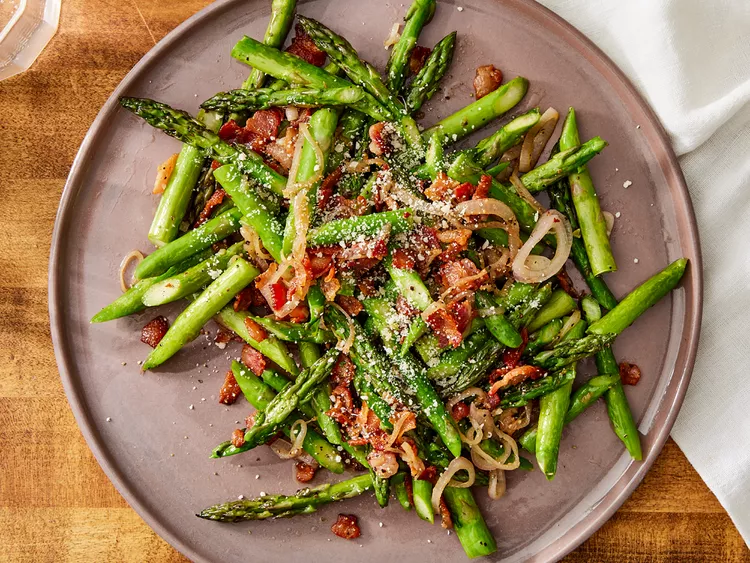

Fried Asparagus with Bacon

Description
A delicious dish of fried asparagus and fresh bacon mixed in. This is a quick and easy recipe to put together. Ready to servce in only 25 minutes.
This recipe prepares 4 servings of this delicious dish.
Ingredients
- 3 slices bacon, chopped
- 1 1/2 teaspoons butter
- 1 pound fresh asparagus, trimmed
- 1 medium shallot, thinly sliced
- salt and ground black pepper to taste
- 1 tablespoon greated Parmesan cheese
Steps
- Gather all ingredients
- Cook and stir bacon in a skillet over medium heat until crisp, about 5 minutes. Drain grease
- Add butter to the skillet and let melt. Stir in asparagus and shallot, thenm season with salt and pepper. Cover and cook, stirring occasionally, until asparagus is tender, about 5 minutes.
- Transfer asparagus mixture to a platter. Sprinkle with Parmesan cheese.